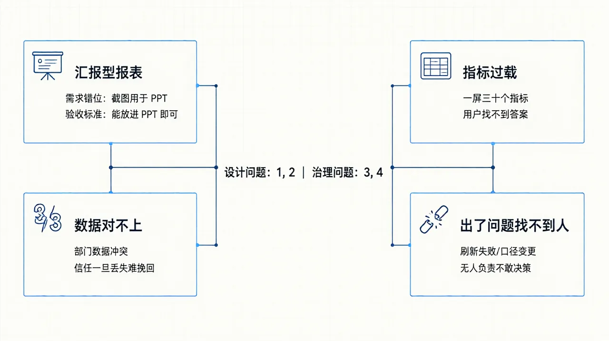
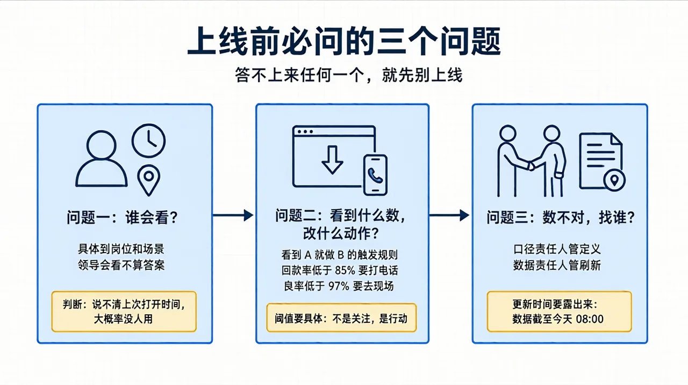
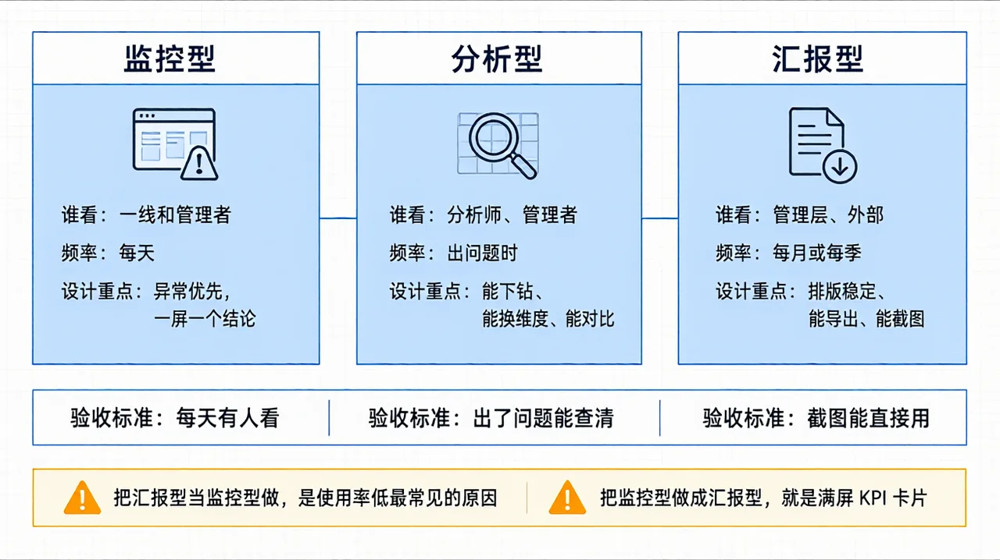
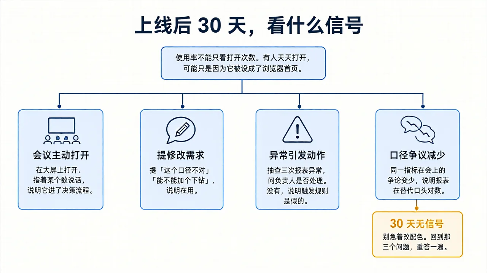

为什么你的 Power BI 报表上线后没人用？
报表没人用，根因不是界面和数据，是没对应一个具体决策。上线前三个问题，答不上来就别上。
先说结论：报表没人用，不是界面问题，也不是数据问题。是它没有对应任何一个具体的决策。
我做了 10 年报表。见过验收会上讲得很漂亮的看板，两周后打开访问记录，只有开发和领导本人。也见过长得朴素、就三张图的东西，车间每天开工前都要看一眼。
差别不在做得好不好看。在于做之前有没有回答一个问题：这张报表上线后，谁会因为看了它而改变一个动作。
这篇讲四件事：报表没人用的四个常见原因；上线前必须问清楚的三个问题；一张报表该有的四层结构；上线后 30 天该看什么信号。
报表没人用，先排除这四个原因
第一，它其实是汇报用的。
很多报表从需求开始就是错位的。业务方说要「一个能看到全部数据的看板」，真实用途是季度汇报时截个图。这种报表一年用四次，做得多漂亮都不会有日常访问。
汇报型报表不是不该做，是别指望它有使用率。它的验收标准是「截图能放进 PPT」，不是「每天有人打开」。
第二，一屏三十个指标，没有主问题。
指标越多，看的人越不知道先看哪个。人打开报表的前三秒，是在找一个答案，不是在看一堆数字。找不到，就关了。
第三，数字对不上，没人解释。
两个部门报出两个销售额，或者报表和财务系统差几百块。第一次有人问，答不上来；第二次就没人问了，回去自己拉 Excel。信任一旦掉了，很难捡回来。
第四，出了问题找不到人。
刷新失败、口径变了、维度对不上，不知道找谁。一张没人负责的报表，用户不敢拿它做决定。
这四条里，第一条和第二条是设计问题，第三条和第四条是治理问题。四个都占，报表基本就是废的。

上线前必问的三个问题
这张清单我只保留三个问题。答不上来任何一个，就先别上线。
问题一：谁会看？具体到岗位和场景
「领导会看」不算答案。要看的是：哪个岗位、在什么时间、坐在哪里、打开它之前刚做完什么。
销售总监是周一早上看上周区域达成，还是每天下午看当日回款？生产经理是班前会前看，还是设备报警时看？场景不同，同一张报表的设计完全不一样。
一个可操作的判断：如果说不清「他上次是什么时候打开的」，这张报表大概率没人用。
问题二：看到什么数，他会改什么动作？
这是三个问题里最硬的。报表的价值不在展示，在触发。
比如：某区域回款率低于 85%，销售总监当天要给区域经理打电话。某条产线良率连续两天低于 97%，生产经理要去现场看。某客户毛利率跌破 15%，客户经理要重谈价格。
这些「看到 A 就做 B」的规则，才是报表真正的需求。没有触发规则，报表就只是一张图。
写规则的时候，阈值要具体。不是「回款不好要关注」，是「低于 85% 要打电话」。
问题三：数不对的时候，他找谁？
这个问题决定报表能不能被信任。
每张报表要有一个口径责任人，一个数据责任人。前者管「这个指标怎么定义」，后者管「数据为什么没刷新、为什么少了」。名字要写在报表上，不是写在需求文档里。
再加一条：每个关键指标的更新时间要露出来。用户看到「数据截至今天 08:00」，就知道能不能用。看不到时间戳，他就会怀疑。

按决策倒推：一张报表的四层结构
三个问题答完，报表的结构其实是定好的。
第一层，主问题。 一屏只回答一个问题。这一屏的标题应该是一句人话，比如「本周哪些区域没达成」，不是「销售分析」。
第二层，异常。 把需要动作的东西放最上面。达成率低于阈值的区域排前面，颜色和排序都按异常来。正常的部分不用占地方。
第三层，下钻。 从异常能点到明细。看到某区域没达成，点进去能看是哪个产品、哪个客户、哪一天掉的。下钻路径要短，三步以内。
第四层，口径。 每个指标旁边能查到定义、责任人、更新时间。这一层平时不显眼，但它是信任的地基。
四层里，最容易被砍掉的是第二层和第四层。砍掉第二层，报表变成数据陈列；砍掉第四层，报表变成一次性用品。
三类报表，别混着做
一张报表想同时满足所有人，最后谁都满足不了。按用途分三类，分开设计。
| 类型 | 谁看 | 频率 | 设计重点 |
|---|---|---|---|
| 监控型 | 一线和管理者 | 每天 | 异常优先，一屏一个结论 |
| 分析型 | 分析师、管理者 | 出问题时 | 能下钻、能换维度、能对比 |
| 汇报型 | 管理层、外部 | 每月或每季 | 排版稳定、能导出、能截图 |
监控型的验收标准是「每天有人看」；分析型的验收标准是「出了问题能查清」；汇报型的验收标准是「截图能直接用」。
把汇报型当监控型做，是使用率低最常见的原因。反过来，把监控型做成汇报型，就是满屏 KPI 卡片。

上线后 30 天，看什么信号
使用率不能只看打开次数。有人天天打开，可能只是因为它被设成了浏览器首页。
看四个信号：
- 会议里有没有人主动打开它。 这是最强的信号。有人在大屏上打开、指着某个数说话，说明它进了决策流程。
- 有没有人提修改需求。 提「这个口径不对」「能不能加个下钻」，说明在用。只提「能不能再加个字段」，可能只是想要个数据字典。
- 异常有没有引发动作。 抽查三次报表上的异常，去问对应的负责人有没有处理。没有，说明触发规则是假的。
- 口径争议有没有减少。 同一指标在会上的争论变少，说明报表在替代口头对数。
30 天里四个信号一个都没有，别急着改配色。回到那三个问题，重答一遍。

我的判断
这件事我给三档。
必须做：上线前那三个问题，一张报表一张报表地问。这是投入产出最高的一步，半小时能筛掉一半注定没人用的需求。
值得做：按监控型、分析型、汇报型分开建。工作量增加不多，但每张报表的目标清楚了。
可以先放：美化、动效、复杂的书签导航。在没人用之前，这些都不解决问题。
还有一条边界：如果没人用的原因是「数据本身不可信」，那不是报表设计能解决的。先去治理口径，再谈使用率。我这些年的第一条方法论就是「先问清楚要做什么决定」，不是「先把数据接进来」。
一张报表的成败，在上线前就定了。上线后做的，只是验证。
报表设计和口径治理的具体做法，博客里按主题分过类。需要有人把现有报表盘一遍、给出改造顺序的，属于服务里的评估环节，联系页可以约。
你手上那张没人用的报表，卡在三个问题里的哪一个？